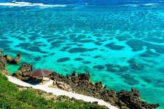
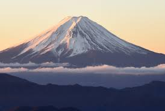

Hokkaido: A Nature Lover’s Paradise If you’re seeking a destination that embodies natural beauty, look no further than Hokkaido. This northern gem is a feast for the senses, showcasing breathtaking landscapes and remarkable seasonal changes that make every visit unforgettable. In the winter, Sapporo transforms into a magical snowy wonderland, famously hosting the Sapporo Snow Festival. Here, you can marvel at incredible ice sculptures that line the streets, creating a whimsical atmosphere.
As the seasons change to summer, the rolling lavender fields of Furano burst into vibrant colors, painting the countryside with their stunning hues. Meanwhile, the lakes and mountains of Shiretoko National Park offer not only enchanting scenery but also unique wildlife encounters that are sure to captivate any nature lover. Don’t miss the opportunity to experience the natural splendor of Hokkaido for yourself!
Okinawa: A Tropical Escape If you're on the lookout for a destination that combines sun, sand, and cultural richness, Okinawa should be at the top of your list. Renowned for some of the most breathtaking beaches in Japan, its breathtaking landscapes are truly a paradise. Ishigaki Island, for instance, boasts crystal-clear waters and vibrant coral reefs, making it an ideal spot for snorkeling and diving enthusiasts.
In addition to its natural beauty, Okinawa invites you to explore the unique Ryukyu culture, with a visit to the historic Shurijo Castle providing a glimpse into its rich heritage. Imagine yourself unwinding under swaying palm trees, embracing the relaxed rhythm of island life. Okinawa is not just a getaway—it's an experience that promises both adventure and tranquility. Don’t miss out on this slice of paradise!
Mount Fuji: Japan’s Iconic Peak No trip to Japan can truly be deemed complete without experiencing the stunning majesty of Mount Fuji. Imagine standing on the serene shores of Lake Kawaguchi, hiking to the summit for a panoramic view, or catching a glimpse of this iconic peak from the window of a high-speed Shinkansen train—each perspective is nothing short of breathtaking. To enhance your visit, consider exploring the nearby Hakone area, where you can relax in a soothing onsen (hot spring) while taking in the remarkable sight of Mount Fuji in the distance. Don't miss out on this unforgettable experience that beautifully encapsulates the essence of Japan!
Japan is a mesmerizing country that captivates every sense. Imagine savoring a steaming bowl of ramen in a welcoming izakaya, marveling at the grace of a geisha in Kyoto, or being enchanted by the vibrant neon lights illuminating Tokyo’s skyline—every moment spent in Japan unfolds a new adventure. With its remarkable combination of rich history, cutting-edge modernity, stunning natural landscapes, and warm hospitality, Japan guarantees a travel experience that is truly unmatched.
Don’t miss out on this incredible opportunity! Pack your bags and set off for the Land of the Rising Sun—where each corner reveals a new story, and every experience is one you will treasure for a lifetime.
So, is Japan your next destination?